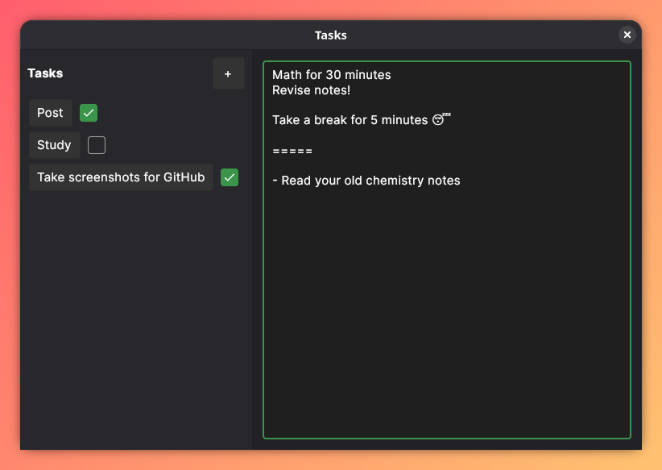
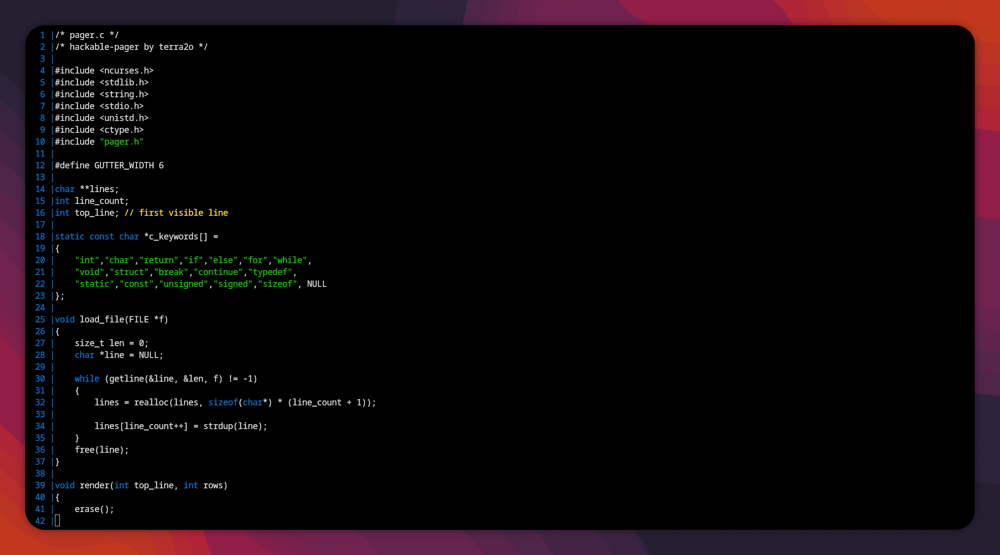
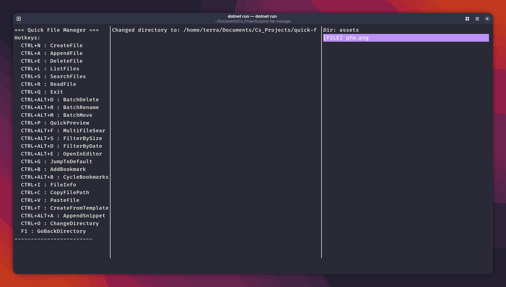

Apps
Go Back
Finished Projects
Tasks

Tasks is a to-do application written in C# + Avalonia. Written to make writing tasks down simpler. Solves the issue that modern to-do apps are too complex.
I learned about important desktop app making practices while making this app. I learned I must separate logic and UI.
hackable-pager

hackable-pager is a minimal pager that's flexible for other projects. Written in C + ncurses. Written so that people don't have to re-invent the wheel.
I learned a lot about memory while working with C. Also using ncurses made me good at using documentation, even if they're old.
Quick File Manager

Quick File Manager is a tty file manager written in C#. Its purpose is delivering a user-friendly environment for tty file management.
QFM doesn't use any frameworks. Because of this, I learned how to handle raw terminal UI, and input handling.